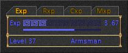
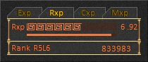

Tabbed XP
The Tabbed XP window is a custom tabbed window that is used to show the current level of the various types of PVE, PVP, Champion, and Master Level experience.
The Tabbed XP window will appear when you click on the button labeled "Tabbed XP" in the main menu or command windows of the user interface. In addition you can click on your characters name at the top of the summary window to get it to appear. There are hidden buttons in the middle of the status bar on each tab that can be used to toggle the appearance of the Quest Journal, Master Level journal, and the RRank table for the associated tab.
- Conceal
There is nothing shown when the window is concealed. The window is invisible with no graphics or controls to minimize the amount of memory used. Nothing will appear on the screen when you attempt to activate the window.
- Disable
Style 1
This Tabbed XP window shows a minimal amount of information and defaults with the EXP tab first.
Style 2
This Tabbed XP window shows additional information and defaults with the EXP tab first.

Style 3
This Tabbed XP window shows additional information and defaults with the EXP tab first. The player's total number of Realm Points is shown on the Rxp tab instead of their Realm Title.

Style 4
This Tabbed XP window shows a minimal amount of information and defaults with the RXP tab first.

Style 5
This Tabbed XP window shows additional information and defaults with the RXP tab first.
Style 6
This Tabbed XP window shows additional information and defaults with the RXP tab first. The player's total number of Realm Points is shown on the Rxp tab instead of their Realm Title.